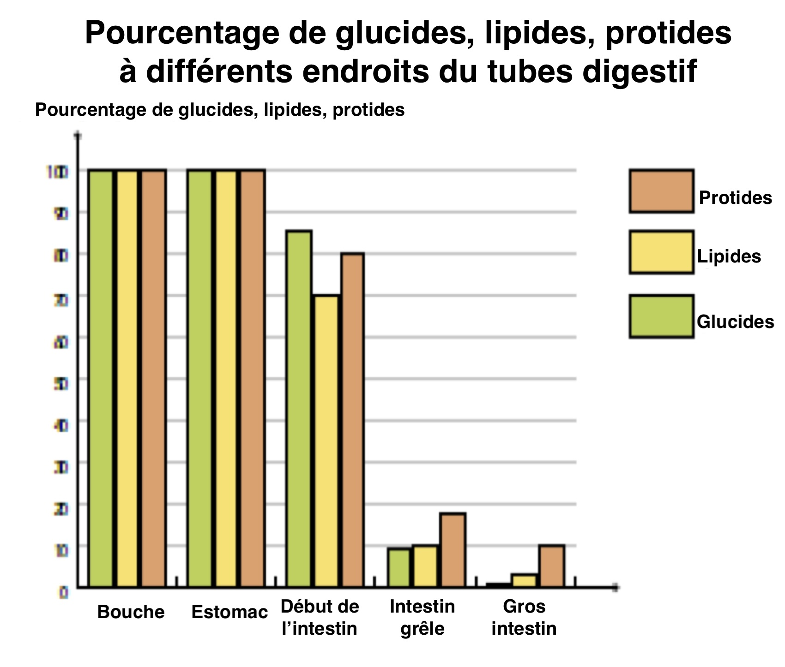

Utilisez l'image de référence pour répondre aux affirmations ci-dessous.

1. Les proportions de protéines, lipides et glucides restent constantes de la bouche jusqu’au début de l’intestin grêle.
2. L’absorption des nutriments se déroule principalement au niveau de l’intestin grêle.
3. Les quantités de protéines, lipides et glucides diminuent fortement dans l’estomac.
4. Les glucides sont totalement absorbés avant d’arriver au gros intestin.
5. Au niveau de la bouche, aucun nutriment n’a encore été absorbé.